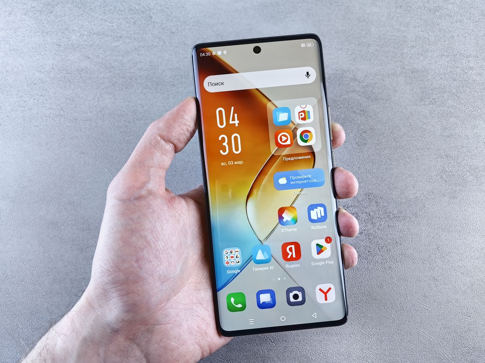
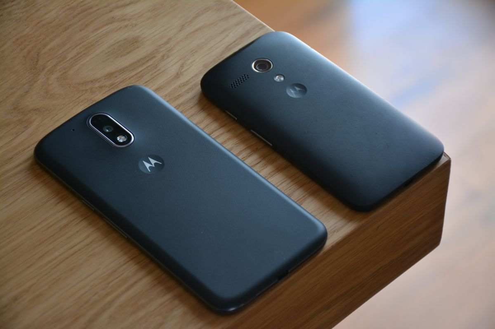

Cara memindahkan kontak ke HP baru yang paling aman adalah menyalakan sinkronisasi kontak di akun Google pada HP lama, lalu masuk dengan akun yang sama di HP baru. Kontak akan muncul sendiri dalam beberapa menit. Kalau sebagian kontak tersimpan di memori HP atau kartu SIM, ekspor dulu jadi berkas VCF atau salin lewat SIM sebelum HP lama dijual atau direset.
Intinya, kontak di HP Android tersimpan di empat tempat: akun Google, memori telepon, kartu SIM, dan akun merek HP. Tempat penyimpanan inilah yang menentukan apakah kontakmu pindah sendiri atau harus manual. Kontak di akun Google paling mudah: masuk di HP baru dengan sinkronisasi aktif, daftar kontak muncul sendiri. Kontak di memori telepon harus diekspor jadi berkas VCF, lalu diimpor di HP baru. Kontak di kartu SIM ikut pindah bersama kartunya, tapi hanya nomornya. Kalau HP lama mati total atau hilang, cadangan akun Google jadi jalan terakhir. Nyalakan sinkronisasi sebelum HP lama dilepas. Per November 2026, semua cara memakai fitur bawaan dan layanan gratis Google dan Apple.
Di mana kontakmu tersimpan sekarang?
Sebelum memilih cara, cek dulu di mana kontakmu tersimpan, karena cara yang salah bisa membuat sebagian nomor tertinggal. Buka aplikasi Kontak di HP lama, ketuk satu nama, lalu lihat keterangan kecil di kartu kontak itu. Biasanya tertulis akun Google, memori telepon, atau kartu SIM. Ulangi untuk dua atau tiga nama lain, karena kontak dari sumber berbeda bisa tercampur dalam satu daftar. Kalau kontakmu tersimpan di akun bawaan merek HP, seperti akun Samsung atau Xiaomi, pindahkan dulu ke akun Google lewat menu pengaturan kontak, supaya tidak terkunci di ekosistem satu merek.

Bagaimana cara memindahkan kontak lewat akun Google?
Ini cara paling aman dan paling sedikit langkahnya, cocok bila HP lama dan HP baru sama-sama Android.
- Di HP lama, buka Setelan, ketuk Akun, lalu pilih akun Google yang kamu pakai.
- Ketuk Sinkronkan akun, pastikan sakelar Kontak menyala, lalu ketuk Sinkronkan sekarang.
- Buka contacts.google.com di peramban HP atau laptop, masuk dengan akun yang sama, dan hitung apakah jumlah kontak di sana sama dengan jumlah di HP lama. Kalau belum sama, tunggu beberapa menit lalu muat ulang halamannya.
- Di HP baru, masuk dengan akun Google yang sama lewat Setelan, lalu Akun, lalu Tambahkan akun.
- Nyalakan sinkronisasi Kontak di HP baru dan tunggu beberapa menit sampai daftar kontak muncul.
Cara ini tidak memindahkan kontak di memori telepon atau kartu SIM, jadi cek dulu jumlah kontak di contacts.google.com sebelum menjual HP lama.
Bagaimana kalau kontak tersimpan di memori HP?
Kontak di memori telepon tidak ikut pindah saat kamu ganti HP, jadi harus diekspor dulu jadi satu berkas VCF, format standar yang memuat seluruh buku telepon beserta nama, nomor, alamat email, dan foto kontak.
- Di HP lama, buka aplikasi Kontak, ketuk menu Perbaiki dan kelola, lalu pilih Ekspor ke file.
- Pilih akun atau sumber kontak yang mau diekspor, lalu ketuk Ekspor ke file .VCF dan simpan berkasnya.
- Kirim berkas VCF itu ke HP baru. Cara paling gampang adalah kirim ke dirimu sendiri lewat WhatsApp atau email, atau pindahkan lewat kabel data dan Bluetooth.
- Di HP baru, buka aplikasi Kontak, ketuk Atur, pilih Impor dari file, tentukan akun Google sebagai tempat penyimpanan, lalu pilih berkas VCF tadi.
- Tunggu sampai impor selesai, lalu bandingkan jumlah kontak di HP baru dengan jumlah di HP lama.
Simpan berkas VCF ini sebagai cadangan di laptop atau Google Drive, supaya bisa dipakai lagi kalau HP baru bermasalah.
Apakah kartu SIM masih bisa dipakai untuk pindah kontak?
Bisa, tapi cara ini paling terbatas dan sebaiknya jadi cadangan. Kartu SIM umumnya hanya muat sekitar 250 kontak, dan yang tersimpan hanya nama dan satu nomor per kontak, tanpa alamat email dan tanpa foto kontak.
- Di HP lama, buka aplikasi Kontak, ketuk menu Impor atau Ekspor, lalu pilih Ekspor ke kartu SIM.
- Pilih kontak yang mau dipindah, lalu ketuk Ekspor dan tunggu sampai selesai.
- Pindahkan kartu SIM ke HP baru, buka aplikasi Kontak, ketuk Atur, lalu Kelola SIM, dan ketuk Impor.
- Pilih akun Google sebagai tujuan impor, supaya kontak tidak terjebak lagi di SIM.
Ingat, pindah kartu SIM hanya memindahkan nomor yang memang disimpan di kartu itu, bukan seluruh buku kontak.

Bagaimana pindah kontak dari Android ke iPhone, dan sebaliknya?
Pindah antar sistem operasi tetap bisa, tapi caranya berbeda. Dari Android ke iPhone, pakai aplikasi Move to iOS, aplikasi resmi Apple yang tersedia tanpa biaya di Play Store. Jalankan aplikasi itu saat proses pengaturan awal iPhone baru, pilih Kontak di daftar data yang mau dipindah, lalu tunggu sampai bilah pemuatan di iPhone selesai. Apple menyebut daftar yang dipindahkan mencakup kontak, riwayat pesan, foto, dan kalender. Dari iPhone ke Android, jalannya lewat iCloud: buka iCloud lewat peramban, ekspor kontak jadi berkas vCard, lalu impor berkas itu ke Google Contacts dan sinkronkan ke HP Android baru. Kalau HP lama dan HP baru satu merek, pakai aplikasi bawaan pabrikan: Samsung punya Smart Switch, Xiaomi menyediakan Mi Mover, sementara OPPO dan vivo memakai Clone Phone.
Kontak sudah pindah, apa yang perlu dicek terakhir?
Jangan reset HP lama sebelum tiga hal ini beres. Pertama, bandingkan jumlah kontak di HP baru dengan jumlah di HP lama atau di contacts.google.com. Kedua, gabungkan kontak ganda: buka Google Contacts, pakai fitur gabungkan dan perbaiki, supaya satu orang tidak muncul dua kali dengan nomor yang berbeda. Ketiga, cek beberapa nama penting, seperti keluarga dan atasan, dan pastikan nomornya benar sebelum HP lama dijual atau direset. Kalau ada nama yang hilang, ulangi ekspor VCF selagi HP lama masih di tanganmu. Sekali HP lama direset, kontak yang hanya tersimpan di memorinya tidak bisa kembali.
Ganti HP tidak harus berarti kehilangan nomor penting. Cek dulu di mana kontakmu tersimpan, pilih cara yang cocok, lalu verifikasi jumlahnya sebelum HP lama dilepas. Lima menit mengecek di awal jauh lebih murah daripada mencari nomor yang hilang belakangan.
Sumber dan Info Resmi
Langkah dan angka di artikel ini merujuk ke sumber berikut:
- Ahmadweb: langkah sinkronisasi akun Google, ekspor dan impor berkas VCF, cara mengecek tempat kontak tersimpan, dan penanganan HP lama yang sudah mati total.
- Tiktak.id: kartu SIM umumnya hanya muat sekitar 250 kontak, verifikasi lewat contacts.google.com, aplikasi bawaan pabrikan (Smart Switch, Mi Mover, Clone Phone), dan Move to iOS tersedia tanpa biaya di Play Store.
- Apple Support: Move to iOS adalah aplikasi resmi Apple untuk pindah dari Android ke iPhone; daftar yang dipindahkan mencakup kontak, riwayat pesan, foto, dan kalender.
- Google Support: Google Contacts di contacts.google.com adalah tempat melihat dan mengelola kontak yang tersimpan di akun Google.
- Erablue: langkah sinkronisasi akun Google dan pemindahan lewat kartu SIM.
- Kapanlagi: sinkronisasi iCloud untuk iPhone dan pemindahan lewat berkas VCF.
- JalanTikus: langkah ekspor dan impor VCF serta pindah kontak iPhone ke Android lewat Gmail.